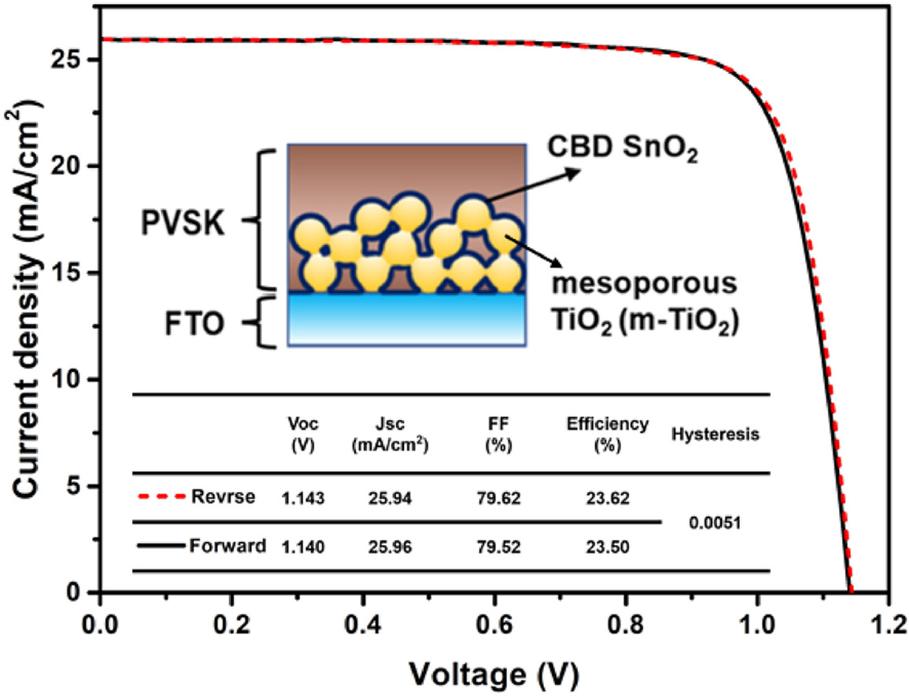

Scholarly article
Exploring the efficiency enhancement of perovskite solar cells by chemical bath depositing SnO2 on mesoporous TiO2 electrode
Materials Today Chemistry, 41, 102329 (2024).
Research topic: Perovskite Solar Cells
Abstract
This study presents a groundbreaking approach to enhance the efficiency of perovskite solar cells (PSCs) by employing Chemical Bath Deposited (CBD) SnO2 on mesoporous TiO2 (m-TiO2) as an electron transport layer (ETL) without a traditional compact TiO2 (c-TiO2) layer between FTO (fluorine-doped tin oxide) and m-TiO2 ETL. Our investigation reveals that this method significantly improves carrier dynamics, as evidenced by reduced time constants compared to traditional ETLs. The CBD SnO2 not only augments electron transport but also effectively reduces defect density in m-TiO2 films. These enhancements are reflected in the improved photovoltaic parameters of the cells, including higher open-circuit voltage (V-OC), short-circuit current (J(SC)), fill factor (FF), and an impressive power conversion efficiency (PCE) exceeding 23.62 %. The study further underscores the scalability of this technology, highlighting advancements in screen printing and chemical bath deposition techniques vital for large-area PSC applications. Remarkably, the uniformity of PCE across large-area cells confirms the efficacy and consistency of this approach, which provides a new and general strategy for preparing high-efficiency PSCs.
Highlights
- The study introduces a novel ETL using CBD SnO2 on m-TiO2 enhancing carrier dynamics and reducing recombination.
- Integration of CBD SnO2 with m-TiO2 significantly increases key photovoltaic metrics, achieving a PCE of over 23.62%.
- Advances in screen printing and CBD methods allow this method to be scaled up effectively, maintaining PCEs between 21.75% and 23.52% across large areas.
- This work simplifies the PSC fabrication process, helping reduce costs while maintaining high efficiency.
Graphical Abstract
